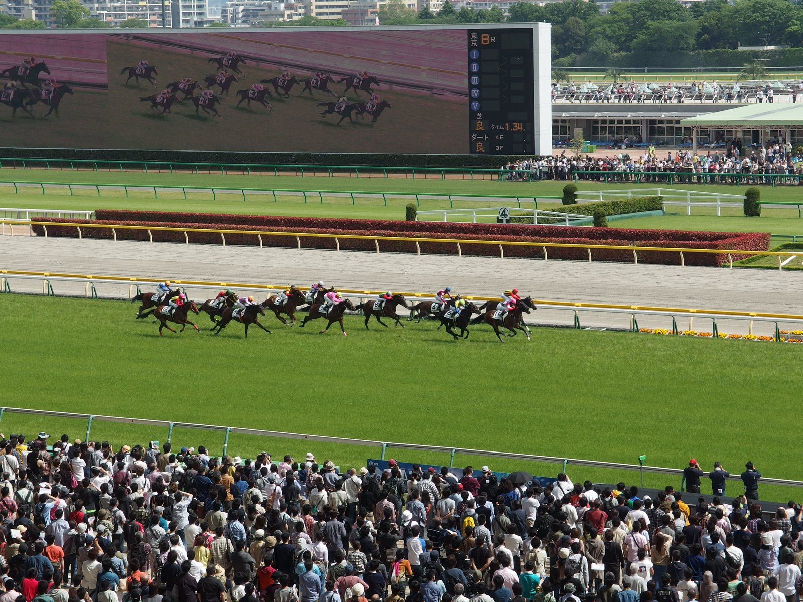

Dotsy, a 11-1, da a John Grabowski su primer stakes como preparador en el Frizette
La potranca tordilla de TSP Enterprises se impuso por dos cuerpos y tres cuartos en el Frizette Stakes (Grado I) de Belmont Park. Es el primer ganador de stakes del exjockey John Grabowski como preparador.

La carrera se decidió a mitad de la recta. Dotsy, con Kendrick Carmouche, viajó por el exterior de la favorita Libby Loyd, tres caballos abiertas, a la estela de Girls Wear Pearls. La líder pasó el primer cuarto de milla en 22,98 s y la media milla en 45,75 s sobre una pista rápida. Cuando Girls Wear Pearls cedió, Dotsy y Libby Loyd entraron juntas en la recta y pelearon tranco a tranco hasta que la hija de Tacitus se despegó. Paró el crono en 1:36,07 para la milla.
Rum Twist fue segunda y Revenge of the Sis entró tercera, a un cuerpo y cuarto. Libby Loyd se apagó hasta la cuarta plaza.
Para Grabowski, que entrena nueve caballos en Finger Lakes, Dotsy lo es casi todo. Ya le dio su primer ganador como preparador en agosto, al romper el maiden en Saratoga por cuatro cuerpos y medio. Su anterior éxito en un stakes de Belmont Park lo había logrado sobre la silla: Impeachthepro, en el Hudson Handicap del 21 de octubre de 2001. «Es la experiencia más increíble de mi vida, aparte del nacimiento de mis dos hijas», dijo.
La compró por 37.000 dólares en la venta de octubre de Fasig-Tipton del año pasado, con un tope de 60.000 en el bolsillo. «Cuando gané la puja, me costó firmar la hoja», recordó. Hija de Coqui, por Fusaichi Pegasus, la potranca es el primer ganador de máximo nivel de Tacitus en Estados Unidos. Ahora suma dos victorias en dos salidas.
«La potranca salió muy bien y nunca le quité nada. Tuve caballo toda la carrera», explicó Carmouche. «Cuando le pedí que acelerara, aceleró. Cuanta más distancia, mejor. Es un monstruo».
El triunfo le reporta 10 puntos para la Kentucky Oaks y un crédito de 30.000 dólares en las inscripciones de la Breeders' Cup Juvenile Fillies de Keeneland. Grabowski no la tenía en la agenda: «Kendrick y yo tenemos que hablar de adónde vamos con ella. Mañana volvemos a Finger Lakes».
— Redacción de Galope al Día